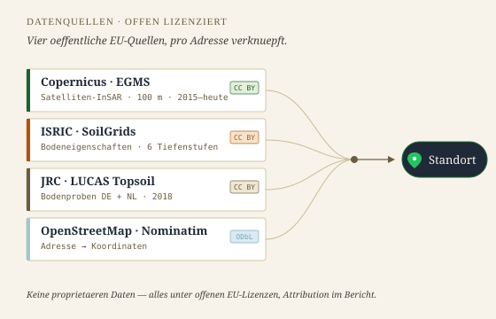

Jeder Punkt auf Ihrem Grundstueck, einzeln gemessen.
Copernicus EGMS liefert in Staedten bis zu 79 Messpunkte pro 500 m — jeder mit eigener Bewegungsrate und sieben Jahren Zeitreihe.
Messpunkte auf dem Grundstueck
Ampel pro Punkt: stabil, auffaellig, signifikant.
Nachbarschaftlicher Kontext
Cluster-Ansicht in der Umgebung — ist das ein Einzelfall oder ein Muster?
InSAR-Messpunkte am Grundstueck
Beispielkarte · Ausschnitt aus einem Bericht
SVG B — InSAR-Karte:
rechte Spalte in der "Was Sie bekommen"-Sektion
Tiefe pro Punkt
Nicht nur heute — sieben Jahre Bewegung.
Jeder Messpunkt bringt seine eigene Zeitreihe mit. Sie sehen Trend, Saisonalitaet und ob sich die Bewegung in den letzten Jahren beschleunigt hat.
Ein einzelner Wert ist eine Momentaufnahme. Ein Trend ueber sieben Jahre ist eine Aussage.
SVG A — Zeitreihen-Chart:
neue Sektion "Tiefe pro Punkt" zwischen Leistungen und Ampel-Erklaerung
Ampel-Einstufung
Ab wann wird’s kritisch?
Dreistufige Klassifikation — an internationalen InSAR-Standards orientiert.
SVG C — Ampel-Klassifikation:
in der "Wie lese ich das?"-Sektion, ersetzt Text-only Erklaerung

Offene Daten
Vier oeffentliche EU-Quellen. Keine Black-Box.
Copernicus-Satellitendaten, ISRIC-Bodenraster, JRC-Bodenproben und OpenStreetMap — alles unter offenen Lizenzen, im Bericht mit Attribution.
Wir nehmen keine proprietaeren Daten. Nichts, was Sie nicht selber nachpruefen koennen.
SVG D — Datenquellen-Stack:
neue Sektion "Offene Daten", ersetzt 03 Data-Pipeline
Premium in Entwicklung
Der ausfuehrliche Bericht kommt bald.
Schwermetall-Analyse, pH-Wert, Bodenart-Details und vollstaendige InSAR-Zeitreihe. Trag dich in die Warteliste ein — Early-Bird-Rabatt fuer die ersten 100.